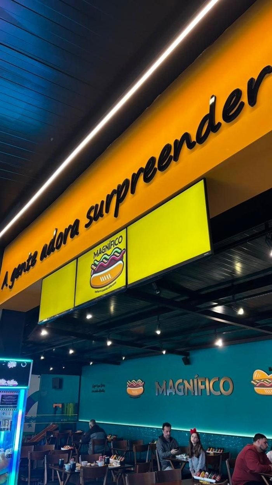

Nas escolas, UPA, farmácias e postos de saúde de Tubarão, as TVs ficam desligadas. A ADmídia conecta o nosso player, o sistema e a gestão do conteúdo, e essas telas viram a TV da Prefeitura para quem usa o serviço público.
Proposta da ADmídia Publicidade Digital · Tubarão/SC


Quem usa a UPA, o posto de saúde, a farmácia municipal e a escola é exatamente o público das campanhas da Prefeitura. E essas pessoas passam o tempo de espera na frente de uma TV desligada.
Rádio, redes sociais e mídia externa falam com todo mundo, inclusive com quem nem usa o serviço público.
Na sala de espera, na fila da farmácia, na entrada da escola: a mensagem certa, para a pessoa certa, na hora em que ela está ali.
O cidadão fica ali sentado esperando, e a única coisa que a tela mostra é o número da senha. Nenhuma campanha, nenhum aviso, nada do que a Prefeitura está fazendo.
TV desligada também custa. São telas compradas com dinheiro público, paradas, perdendo valor e ficando defasadas sem cumprir função nenhuma. Ligar é aproveitar o que já foi pago.
Um aparelho pequeno conectado na TV que já está na unidade.
O conteúdo de todas as telas controlado de um lugar só, pelo computador ou celular.
Montamos e mantemos a programação junto com a Comunicação da Prefeitura.
Exemplos de layout feitos pela ADmídia. Cada tela leva relógio, previsão do tempo e a faixa de notícias.
A Prefeitura decide o que passa. Nada vai ao ar sem aprovação da Comunicação.
O público mais certo das campanhas da Prefeitura, todos os dias, nas próprias unidades.
Obras, entregas e programas da Prefeitura apresentados para o cidadão.
As TVs que estão paradas voltam a ter função, sem comprar tela nova.
Um aviso publicado nas unidades de uma vez, sem depender de cartaz.
Mural e cartaz trocados por tela, com conteúdo que muda quantas vezes precisar.
Informação útil na sala de espera deixa o atendimento mais tranquilo.
Ligadas ao mesmo sistema, todas as unidades viram um só canal: um aviso pode ir para todas, ou só para as escolas, ou só para a saúde.
A Prefeitura vê a TV funcionando nas próprias unidades antes de qualquer decisão sobre as demais.
A Prefeitura indica as unidades com mais movimento.
A ADmídia instala o player nas TVs existentes e coloca o sistema funcionando.
Avisos, vídeos, clima e notícias montados com a Comunicação da Prefeitura.
Analisamos juntos o resultado e o caminho para as demais unidades.
Além das TVs existentes, espaços maiores podem receber várias telas lado a lado ou videowall.



A Comunicação da Prefeitura acompanha e aprova tudo pelo painel, e vê na hora quais telas estão no ar.

Marcamos uma conversa com a Comunicação da Prefeitura e mostramos o sistema funcionando.
WhatsApp: (48) 99107-9940